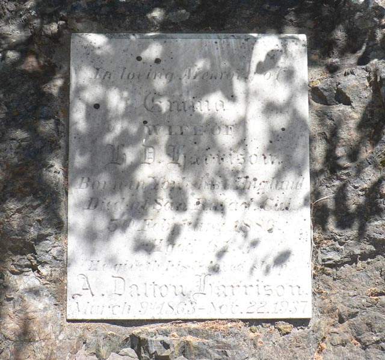

 In loving Memory of Emma Wife of H.D. Harrison Born in Yorkshire England Died in San Rafael Cal 5th Febuary 1886 Age 61 He giveth his beloved sleep A. Dalton Harrison March 9th 1863-Nov. 22. 1937 Return